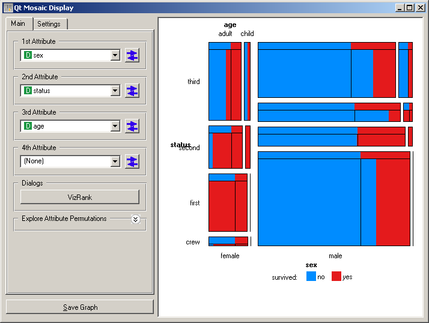
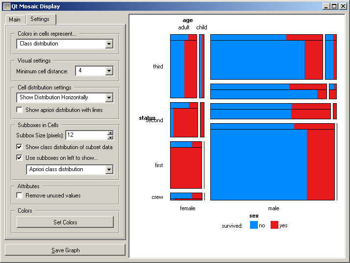
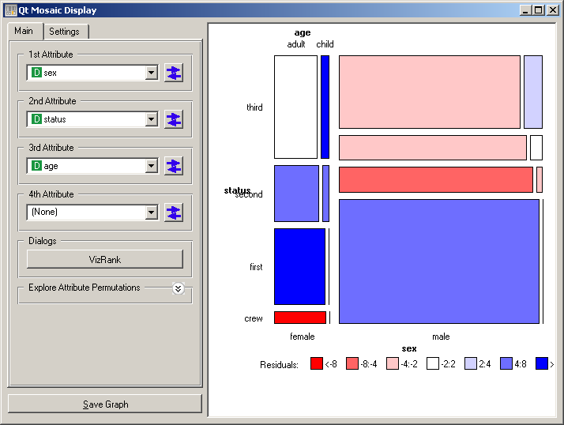
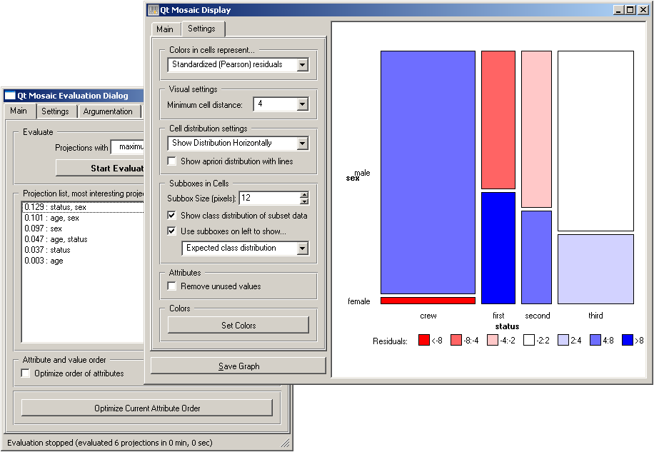

This is documentation for Orange 2.7. For the latest documentation, see Orange 3.
Mosaic Display¶

Shows a mosaic display of n-way tables.
Signals¶
- Inputs:
- Examples (ExampleTable)
Input data set.
- Example Subset (ExampleTable)
A subset of data instances from Examples.
- Selected Examples (ExampleTable)
A subset of examples belonging to manually selected cells in mosaic display.
- Outputs:
- None
Description¶
The mosaic display is a graphical method to visualize the counts in n-way contingency tables, that is, tables where each cell corresponds to a distinct value-combination of n attributes. The method was proposed by Hartigan & Kleiner ([HartiganKleiner81]) and extended by Friendly ([Friendly94]). Each cell in mosaic display corresponds to a single cell in contingency table. If the data contains a class attribute, the mosaic display will show the class distribution.
Orange’s implementation of mosaic display allows to observe the interactions of up to four variables in a single visualization. The snapshot below shows a mosaic display for the Titanic data set, observing three variables (sex, status, and age) and their association with a class (survived). The diagram shows that the survival (red color) was highest for women traveling in the first class, and lowest for men traveling in the second and third class.
This visualization gets slightly more complex - but once getting used to, more informative - if the expected class distribution is shown on the same visualization. For this purpose, a sub-box (Use sub-boxes on the left to show... and below it choose Apriori class distribution. This would plot a bar on the top of every cell displayed, being able to observe the difference between the actual and expected distribution for each cell. Change Apriori class distribution to Expected class distribution to compare the actual distributions to those computed by assuming the independence of attributes.
The degree of deviation from aprori class distribution for each cell can be directly visualized using Standard Pearson residuals option (from Colors in cells represent ... box, see snapshot below). On Titanic data set, this visualization clearly shows for which combinations of attributes the changes of survival were highest or lowest.
If there are many attributes, finding subsets which would yield interesting mosaic displays is at least cumbersome. Orange implementation includes VizRank (Main tab), which can list provide a list of most interesting subsets with chosen cardinality. Various measures of interestingness are implemented, but in principle all favor displays where at least some cells would exhibit high deviation from the apriori class distributions.
Instead of comparing cell’s class distribution to apriori ones, these can be compared to distribution from a subset of instances from the same data domain. The widget uses a separate input channel for this purpose. Notice also that individual cells can be selected/de-selected (clicking with left or right mouse button on the cell), sending out the instances from the selected cells using the Selected Examples channel.
References¶
| [HartiganKleiner81] | Hartigan, J. A., and Kleiner, B. (1981). Mosaics for contingency tables. In W. F. Eddy (Ed.), Computer Science and Statistics: Proceedings of the 13th Symposium on the Interface. New York: Springer-Verlag. |
| [Friendly94] | Friendly, M. (1994). Mosaic displays for multi-way contingency tables. Journal of the American Statistical Association, 89, 190-200. |